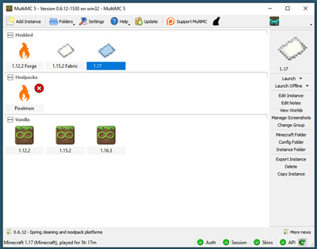

Software reccomendations
Just felt like compiling a list of software that I enjoy using.
I’ll try to add more suggestions as time goes on.
Windows
Notepad++ (site)
Alternative to Windows default Notepad with theming, tabs, auto-formatting, and probably a ton more features I’ve never even used.
MultiMC (site)
Alternative Minecraft client that makes it super easy to use and install mods, as well as managed isolated instances of the game. Also available for Linux.

Windows Terminal with WSL (guide)
Yep, this. If you’re running Windows 10, Windows Terminal is available in the Microsoft Store and can be configured to access a Linux subsystem (ie. Ubuntu, Debian, whatever) within Windows. This is extremely useful for utilising Linux tools on Windows, such as ssh, tidy, ffmpeg, and others.
Cyberduck (site)
My personal favourite FTP/SFTP/WebDAV/etc client for Windows. Free to use with optional licensing, it’s quite modern and easy to use compared to Filezilla imo.
Musicbee (site)
Free music client with skins and add-ons available, it’s still modern and easy to use. Sort of resembles iTunes?
Mp3tag (site)
Music tagging software, not just for mp3 files. Supports mass-tagging and is an actual life-saver. Includes support for pulling tags from MusicBrainz as well as other sources (even custom ones such as Vocadb).